To continue HHS orbits in two free parameters, we use an extended defining system
that consists of several parts.
First, the infinite time interval is truncated, so that instead of
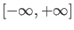
we use 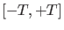, which is scaled to ![$[0,1]$](img252.png) and divided into mesh-intervals.
The mesh is nonuniform and adaptive. Each mesh interval is further subdivided by
equidistant fine mesh points. Also, each mesh interval contains a number of collocation
points. (This discretization is the same as that in AUTO for boundary value problems.)
The equation
and divided into mesh-intervals.
The mesh is nonuniform and adaptive. Each mesh interval is further subdivided by
equidistant fine mesh points. Also, each mesh interval contains a number of collocation
points. (This discretization is the same as that in AUTO for boundary value problems.)
The equation
must be satisfied in each collocation point.
The second part is the equilibrium condition
Third, there is a so-called phase condition needed for the homoclinic solution, similar to
periodic solutions
Here
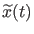 is some initial guess for the solution,
typically obtained from the previous continuation step.
We note that in the literature another phase condition
is also used, see, for example [13]. However, in the present implementation we employ
the condition (90).
Fourth, there are the homoclinic-specific constraints to the solution.
For these we need access to the stable and unstable eigenspaces of the system in the
equilibrium point after each step. It is not efficient to recompute the spaces from
scratch in each continuation-step. Instead, we use the algorithm for continuing
invariant subspaces, as described in [7]. This method adds two small-sized
vectors (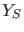 and 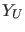) to the system variables, from which the necessary eigenspaces
(stable and unstable, respectively) can easily be computed in each step.
If 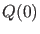 is an orthogonal matrix whose first 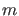 columns form a basis for the invariant
subspace under consideration in the previous step, and
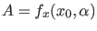 is the Jacobian
at the new
equilibrium point, then we first compute the so-called Ricatti-blocks, 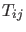, by the formula
If  is the number of state variables, then 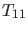 is of size 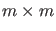 and 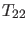
is
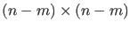. This is done for the stable and unstable eigenspaces separately.
Now and are obtained from the Ricatti equations
is the number of state variables, then 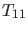 is of size 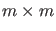 and 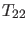
is
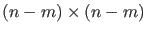. This is done for the stable and unstable eigenspaces separately.
Now and are obtained from the Ricatti equations
Now we can formulate constraints on the behavior of the solution close to the
equilibrium  . The initial vector of the orbit,
. The initial vector of the orbit,  , is placed in the unstable
eigenspace of the system in the equilibrium. We express that by the requirement that it is
orthogonal to the orthogonal complement of the unstable eigenspace. Using , we can
compute the orthogonal complement of the unstable eigenspace. If 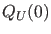 is the
orthogonal matrix from the previous step, related to the unstable invariant subspace,
then a basis for the orthogonal complement in the new step
, is placed in the unstable
eigenspace of the system in the equilibrium. We express that by the requirement that it is
orthogonal to the orthogonal complement of the unstable eigenspace. Using , we can
compute the orthogonal complement of the unstable eigenspace. If 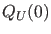 is the
orthogonal matrix from the previous step, related to the unstable invariant subspace,
then a basis for the orthogonal complement in the new step  is
is
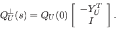
Note that is not orthogonal. The full orthogonal matrix 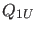 needed for the
next step, is computed separately after each step. The equations to be added
to the system are (after analogous preparatory computations for the stable eigenspace)
Finally, the distances between 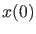 (resp., 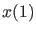) and must be small enough,
so that
A system consisting of all equations (88), (89),
(90), (92), (93) and (94), is overdetermined.
The basic defining system for the continuation of a HHS orbit in two free parameters
consists of (88), (89), (92), (93), and
(94) with fixed
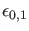, so that the phase condition (90) is
not used. The variables in this system are stored in one vector. It contains
the values of in the fine mesh points including and ,
the truncation time  , two free system parameters, the coordinates
of the saddle , and the elements of the matrices and .
Alternatively, the phase condition (90) can be added if is kept fixed
but 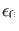 and 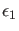 are allowed to vary.
It is also possible to fix and , say, and allow to vary,
again with no phase condition. Other combinations are also possible, in particular, when
the homotopy method [7] is used to compute a starting homoclinic solution.
For more details on the implementation of the homoclinic
continuation we refer to [19].
, two free system parameters, the coordinates
of the saddle , and the elements of the matrices and .
Alternatively, the phase condition (90) can be added if is kept fixed
but 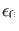 and 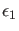 are allowed to vary.
It is also possible to fix and , say, and allow to vary,
again with no phase condition. Other combinations are also possible, in particular, when
the homotopy method [7] is used to compute a starting homoclinic solution.
For more details on the implementation of the homoclinic
continuation we refer to [19].